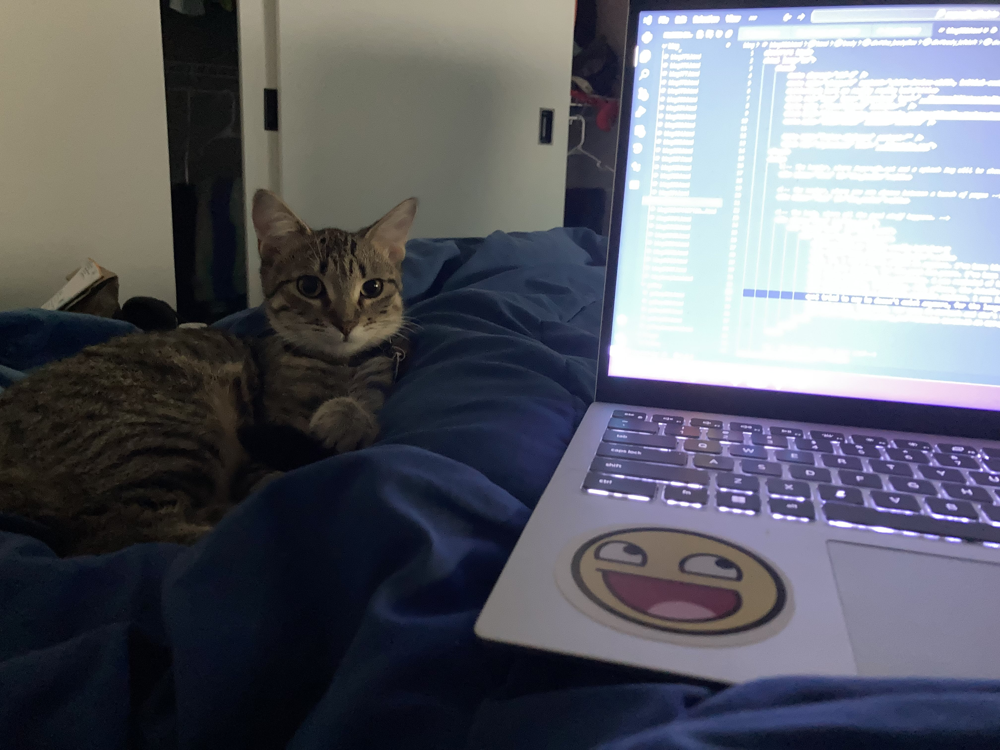

I, uh, I can't dance around it anymore. I've been kind of trying to move past it, and just ignore it, for the past two years, and I've failed. I don't know how to talk about it, and I don't remember many of the specifics. But it was really bad.
I've just been aimless, for the past two years. I've been letting this shadow of him traipse in my mind and I. I don't know. It's just so difficult. I've only mentioned him like nine times on this blog but he rummages through my mind every other week or so.
I had a really bad day yesterday. I was reminded of him. And I was just a bawling mess for two hours. I wrote down "When I think of Krak I don’t want to live in a world where there’s a concept of “Krak” in my head and then I don’t want to be alive because that’s the world I live in and will always live in, and he will always be in my head even after all this time, even after all I’ve tried, ossified, part of the foundation", "I can’t put it into words how it feels after him. I just feel completely violated and empty \ And I try and build myself up again but every other week or so I’m reminded \ There’s a part of me that just. Idk. I can’t escape the feeling of being an unimportant pawn in a psychopath’s unreciprocated-sexual-advance revenge conquest \ I just feel completely powerless \ And like my mind’s not my own"
I watched Sorry, Baby today. And, y'know, the details are completely different, and whatever happened with Krak was completely platonic, though I did end up seeing his ass on Twitter, but. I was just bawling through the entire movie. I, y'know, it's different, but I know what it was like before, and I know what it's like 2 years after. I made a whole fucking videogame trying to contextualize it and put it in the past and get over it. But I can't. I've just been circling the same thing all this time.
I don't wanna be a software engineer anymore. I was inspired to by Krak. I was inspired to do a lot of things by Krak. But I've just, I've just stagnating and lost all this time. And I have no idea what I wanna do, I would think working in games but that's not realistic. But idk. I just. I don't want to be a software engineer. I don't wanna be anywhere near the idea of him.
I tried to say he doesn't exist anymore, for the longest time, that the idea of him is annihilated, "pure energy". But that's not how I feel. I just feel. I don't know. I don't know how to explain how to feel. I feel like something very bad happened to me for an extended period of time and I'm living in the remnant of that and I have no idea how I'm gonna get out.
I got a cat, last week. Her name is Bertuch and she's wonderful and she's sitting by my side while I write this.

Bertuch
I've never told anyone that I know in real life. I've never spoken this sort of thing out loud with my voice. It's a really complicated scenario. But I was in it. And I. God. I was in it.